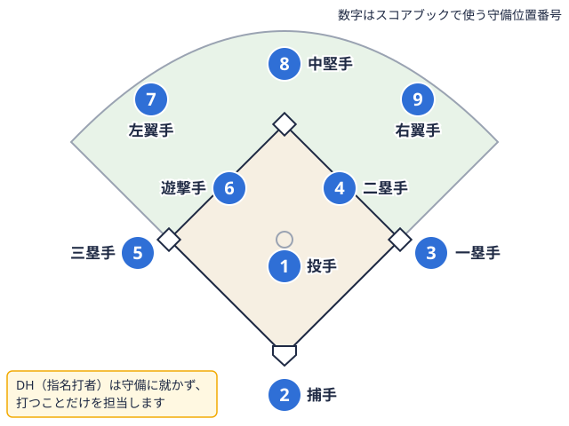

就活ガイド 2026-11-23
大学野球部マネージャーの就活｜「支える経験」をES・面接でどう伝えるか
大学野球部でマネージャー選手ではなく、練習や試合の運営、用具や書類の管理などで部を支える部員。仕事の範囲は大学ごとに違う。 用語辞典で見るを務める学生から、就活の相談でよく聞くのが「自分はプレーしていないから、選手のような武勇伝がない」という悩みです。たしかに打率打者が安打を打った割合。安打の数を打数で割って求める。四球や犠打の打席は打数に入れない。用語辞典で見るや防御率投手が1試合（9回）を投げたら何点に抑えられるかを示す数字。自責点×9÷投球回で求め、小さいほど良い。用語辞典で見るのような分かりやすい実績はありませんが、マネージャー業務には選手以上に多くの人と調整し、チームを裏側から支えてきた経験が積み重なっています。この記事では、東京六大学野球連盟・東都大学野球連盟でマネージャーを務める学生を想定し、「支える経験」を就活のES・面接でどう伝えればいいかを整理します。
用語辞典で見るを務める学生から、就活の相談でよく聞くのが「自分はプレーしていないから、選手のような武勇伝がない」という悩みです。たしかに打率打者が安打を打った割合。安打の数を打数で割って求める。四球や犠打の打席は打数に入れない。用語辞典で見るや防御率投手が1試合（9回）を投げたら何点に抑えられるかを示す数字。自責点×9÷投球回で求め、小さいほど良い。用語辞典で見るのような分かりやすい実績はありませんが、マネージャー業務には選手以上に多くの人と調整し、チームを裏側から支えてきた経験が積み重なっています。この記事では、東京六大学野球連盟・東都大学野球連盟でマネージャーを務める学生を想定し、「支える経験」を就活のES・面接でどう伝えればいいかを整理します。
「プレーしていないから強みがない」は誤解
企業が体育会学生に注目する理由は、競技成績そのものだけではありません。目標に向けて努力を続けてきたこと、組織の中で与えられた役割を果たしてきたこと、そして周囲と協調しながら成果に貢献してきたことが評価の軸になります。マネージャーは試合に出場しない立場だからこそ、チーム全体を俯瞰して動かす調整力や、選手が気づきにくい課題を先回りして解決する力が自然と身についています。この「俯瞰力」と「調整力」は、プレーした選手よりもむしろ言語化しやすい強みだと捉え直すことが、就活の第一歩になります。
マネージャー業務を棚卸しして強みを見つける
まずは自分が担ってきた業務を具体的に書き出すところから始めましょう。主な業務は大学・部によって差がありますが、おおむね次のような領域に分かれます。
- チーム運営の調整: 練習・遠征の日程調整、グラウンド・球場の予約、移動手段の手配
- データ・記録管理: スコアブック試合の経過と選手の成績を、決まった記号を使って書き残す記録用紙。打率などを計算するもとのデータになる。

用語辞典で見るの記録、相手チームのデータ整理、分析資料の作成 - 部員のサポート: 用具の準備・管理、ケガをした部員への対応、体調管理のサポート
- 対外対応: 連盟・大学事務局・OB会とのやり取り、公式戦運営への協力
主務マネージャーの代表にあたる部員。連盟や大学との連絡窓口になり、リーグ戦の運営や合宿の準備なども受け持つ。用語辞典で見る・マネージャーが担う業務範囲の全体像は、大学野球部の主務・マネージャーの仕事内容とは？業務範囲と1年の動きを解説で詳しく整理しています。棚卸しの際は「誰のために、何を、なぜやったか」をセットで書き出すと、後でES・面接の素材にしやすくなります。
エピソードをES・面接向けに言語化する
業務の棚卸しができたら、「課題→行動→成果→学び」という型に当てはめて整理します。たとえば「遠征先の移動手配で直前のトラブルに対応した」という経験であれば、何が課題だったか、自分がどう動いたか、結果どうなったか、そこから何を学んだかを順番に説明できるようにしておきます。数字で示せる部分（部員数、遠征回数、対応した大会数など）があれば具体性が増し、採用担当者にも伝わりやすくなります。ES作成の基本フォーマットやNG例は野球部員の就活エントリーシート(ES)の書き方｜ガクチカ・自己PR・志望動機を書くコツとNG例、自己PR全体の組み立て方は東京六大学・東都大学野球部員の就活術｜体育会経験を強みに変える自己PR完全ガイドも参考になります。
面接で聞かれやすい質問と答え方のポイント
マネージャーを務めた学生の面接では、次のような質問がよく出ます。
| 質問例 | 答え方の軸 |
|---|---|
| なぜ選手ではなくマネージャーを選んだのか | 自分の役割をどう捉え、何にやりがいを感じたか |
| マネージャー業務で一番苦労したことは | 課題の具体性と、自分が取った行動 |
| チームの成果にどう貢献したと思うか | 自分の業務が選手・チームにどうつながったか |
いずれの質問でも、「誰かの成果を支える立場から、何を考えどう動いたか」を一貫して説明できると、調整力・当事者意識の両方を伝えやすくなります。想定質問全体への答え方は野球部員の就活面接対策｜体育会系ならではの想定質問と受かる答え方のコツも確認しておくと安心です。
就活スケジュールで気をつけたいこと
マネージャーは選手の引退時期とは別に、後任への引き継ぎ資料作成やシーズン終了後の整理業務が残ることが多く、就活準備との両立で後手に回りやすい立場でもあります。学年別の就活スケジュールの考え方は野球部員の就活はいつから？学年別スケジュールと秋季リーグ・引退時期の両立ガイドで整理しているので、引き継ぎのタイミングと合わせて早めに計画しておきましょう。自分のチームの今シーズンの戦績はベースボールマニアの東京六大学野球 順位表や東都大学野球1部 順位表からも確認でき、エピソードの裏付けとして使える数字を拾っておくとES・面接の材料が増えます。
まとめ
大学野球部のマネージャー経験は、プレー実績がないからといって就活で不利になるわけではありません。「俯瞰して調整する力」「課題を先回りして解決する力」は、業務を具体的に棚卸しして言語化することで、選手の経験と同じように評価される強みになります。まずは自分が担ってきた業務を書き出し、課題・行動・成果の流れで整理するところから始めてみましょう。一人で言語化に迷う場合は、体育会の就活はツナカレへご相談ください。
出典
野球部のガクチカ、テンプレ＆例文集を受け取る
書き方テンプレ＆例文集（無料PDF）をプレゼント。
部活を続けながら、就活も進めたい方へ
体育会の学生のための就活相談です。無料で、メールアドレス・学年・所属の入力だけで始められます。